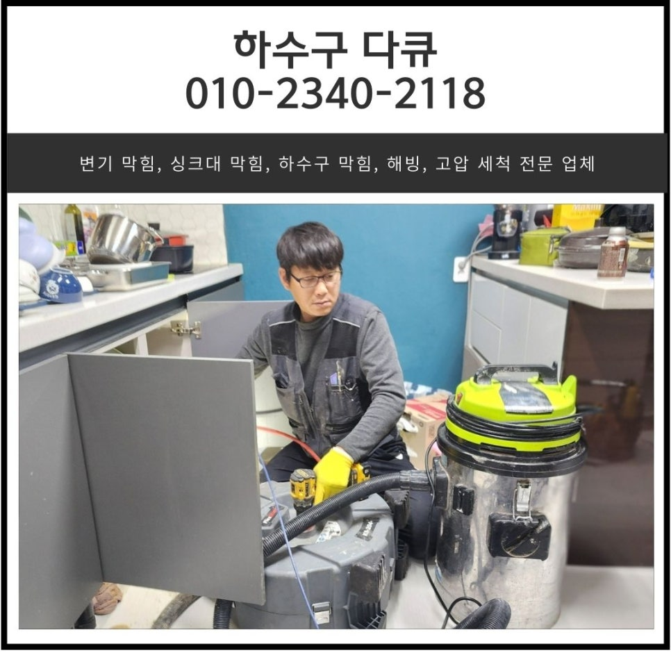
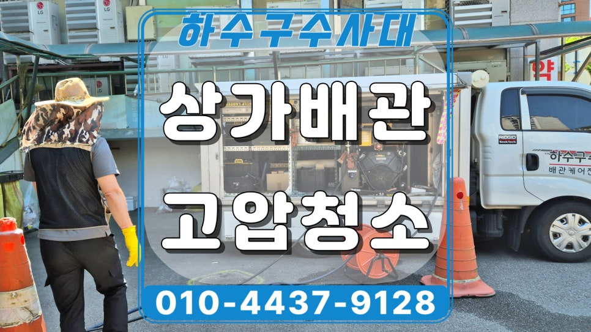
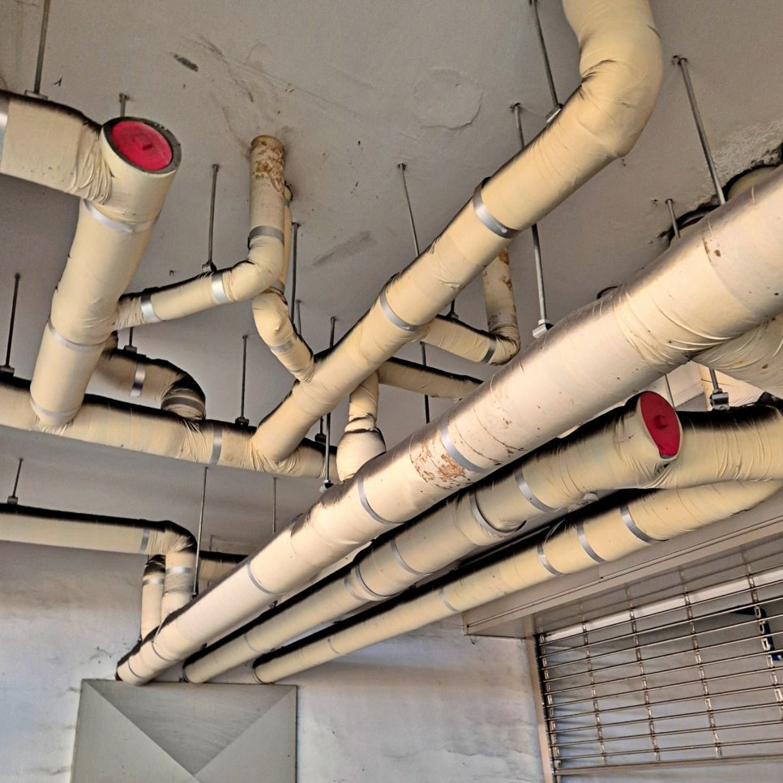
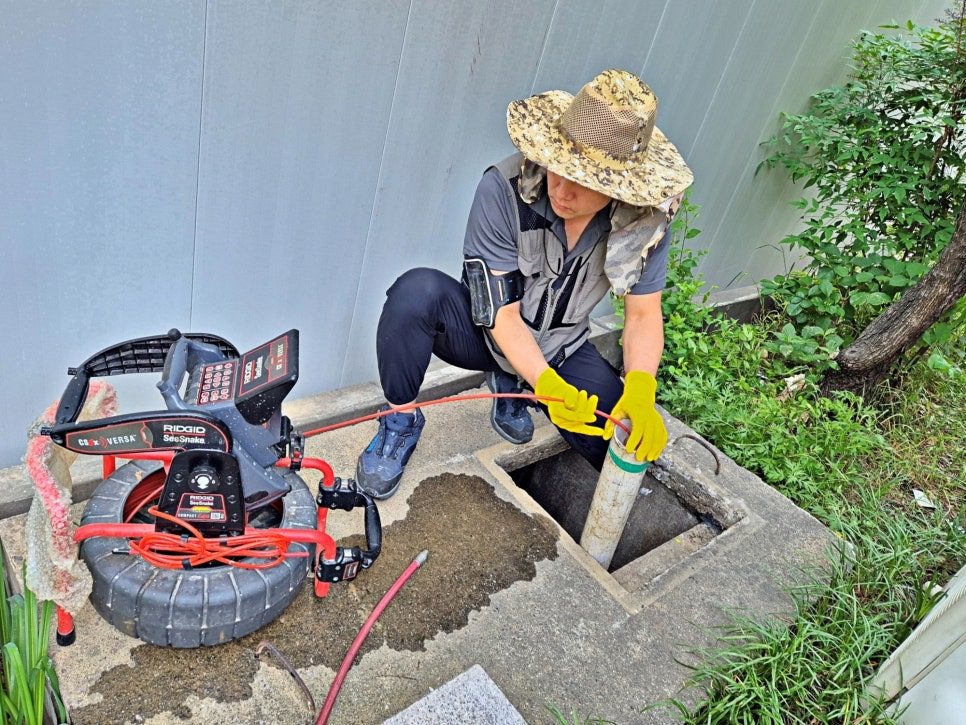
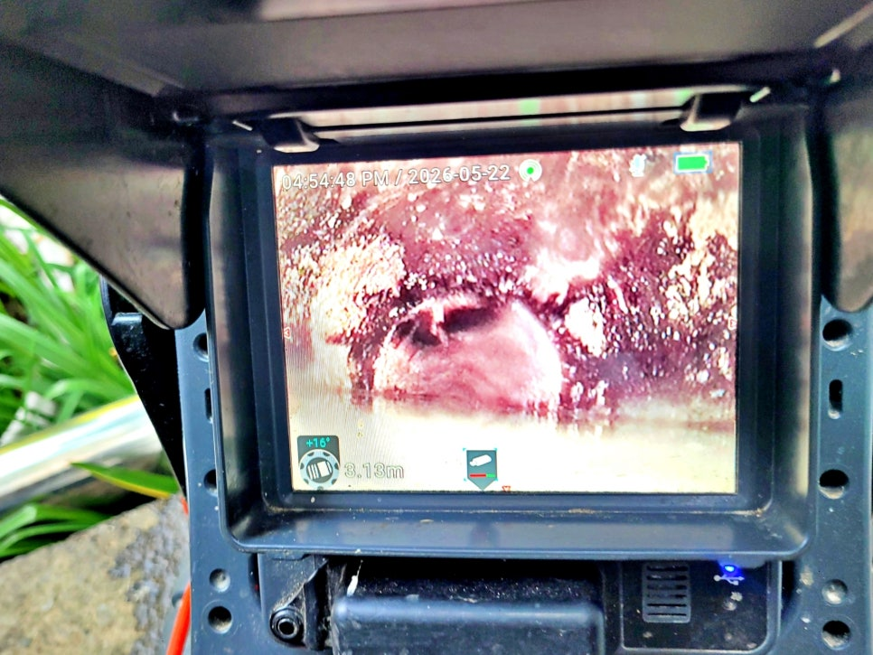
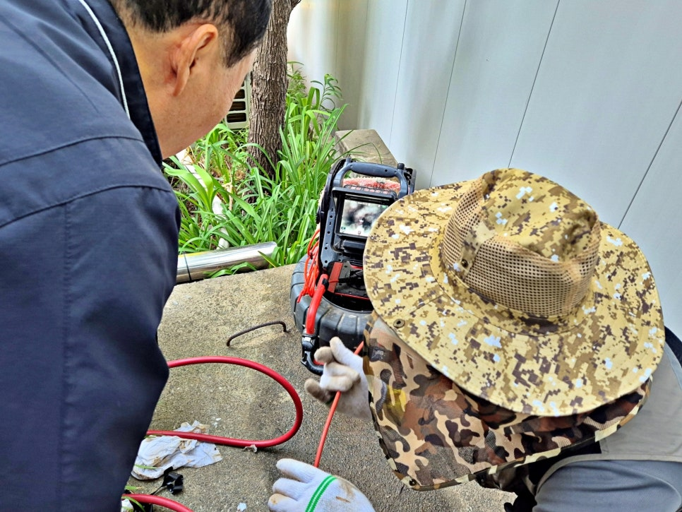
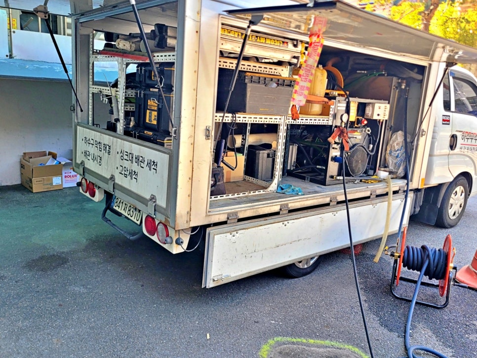

🏠 동탄 싱크대 역류 화성 동탄동 배수구 막힘 청소 전문 업체
화성 싱크대막힘 전문 시공 후기

📋 작업 개요
- 위치: 화성
- 서비스 유형: 싱크대막힘, 하수구막힘, 배관막힘, 맨홀막힘, 역류해결, 뚫는업체, 배관청소, 고압세척
- 작업 일시: 2024. 12. 26. 22:25
- 업체명: 하수구수사대 (010-5615-2118)
🔍 문제 상황
화성 효행구 배양동 상가 하수구역류,
메인 횡주 배관 기름막힘 고압세척으로
해결한 사례
안녕하세요.
화성 배양동 상가 하수구역류 고압세척
시공전문 하수구수사대입니다.
이번 현장은 1층 화장실 바닥 하수구와
매장 싱크대 쪽에서 물이 역류한다는
연락을 받고 방문한 사례입니다.
화성 배양동 상가 하수구역류 현장
상가 건물에서 하수구역류가 생기면
한 매장만 불편한 것으로 끝나지 않습니다.
같은 라인을 쓰는 다른 매장까지
물이 잘 빠지지 않거나 냄새가 올라올 수 있어
초기에 원인을 정확히 확인하는 것이
매우 중요합니다.
외부 오수맨홀에서 배관 내시경 점검 준비
화성 배양동 상가 하수구역류 현장에
도착해 먼저 확인한 부분은
화장실 바닥 하수구와
1층 매장 쪽 배수 상태였습니다.
물을 사용하면 바로 내려가지 않고
정체되는 현상이 보였고,
단순한 배수구 입구 막힘으로 보기에는
범위가 넓었습니다.
내시경 화면으로 확인한 배관 내부 기름막힘 상태
그래서 배관 내시경을 넣어
안쪽 상태부터 확인했습니다.
겉으로 보이는 증상만 보고
작업 방향을 정하면

🔎 원인 분석
💡 전문가 진단: 슬러지와 이물질이 통로를 꽉 막고 있어 배수가 불가능하며, 정밀 타격 및 배관 세척이 동반되어야 해결 가능합니다.
실제 막힌 구간을 놓칠 수 있기 때문입니다.
내시경으로 확인해 보니
오수맨홀로 나가는 메인 횡주관 안쪽에
기름 찌꺼기가 많이 쌓여 있었습니다.
관리인과 함께 내시경 화면을 확인하는 모습
특히 몇 년 동안 배관청소가
제대로 진행되지 않은 상태라
기름이 굳으면서 내부 통로가
많이 좁아진 상황이었습니다.
상가에서는 싱크대 사용량이 많고,
기름기 섞인 물이 반복해서 흘러가다 보면
시간이 지나면서 벽면에 달라붙습니다.
고압세척 장비가 준비된 하수구수사대 차량
처음에는 조금씩 붙지만,
청소 없이 계속 사용하면
배관 안쪽 지름이 줄어들고
결국 하수구역류로 이어질 수 있습니다.
이번 화성 배양동 상가 하수구역류 현장도
바로 그 상태였습니다.
오수맨홀 안쪽으로 밀려나온 기름 찌꺼기
작업은 외부 오수맨홀에서
건물 방향으로 고압세척을 먼저 진행했습니다.
작업 구간이 30m가 넘었기 때문에
한쪽 방향에서만 밀어내는 방식으로는
남은 찌꺼기가 다시 걸릴 수 있었습니다.
그래서 오수맨홀에서 건물 방향으로
1차 세척을 진행한 뒤,
반대 방향에서도 다시 고압세척을
진행했습니다.
내시경과 고압세척을 병행하며 작업하는 장면

🔧 작업 과정
작업 중에는 내시경 카메라로
배관 안쪽을 계속 확인했습니다.
고압세척을 하면 기름 찌꺼기가
오수맨홀 쪽으로 밀려 나오는데,
그 양이 적지 않았습니다.
사진에서도 보이듯이
맨홀 안쪽으로 기름 덩어리와
찌꺼기가 흘러나오는 상태였습니다.
이런 현장은 물만 한 번 내려간다고
작업이 끝난 게 아닙니다.
막힘 원인이 되었던 기름층이
어느 정도 제거됐는지 확인해야
다시 역류하는 일을 줄일 수 있습니다.
총 작업 시간은 약 4시간 정도 걸렸습니다.
고압세척 후에는 화장실 세면대와
바닥 하수구에 물을 흘려보내며
배수 상태를 확인했습니다.
처음과 달리 물이 정체되지 않고
시원하게 빠지는 것을 확인했고,
각 매장 쪽 배수 상태도 함께 점검했습니다.
상가 집합건물은 한 매장만 조심한다고
배관 상태가 유지되기 어렵습니다.
외부 오수맨홀 주변 작업 공간 정리 모습
같은 라인을 여러 매장이 함께 쓰기 때문에
정기적인 점검과 세척 기준이 필요합니다.
상가 집합건물 배관 관리요령
관리 내용
확인 주기
싱크대 사용 매장
기름기 많은 물을 바로 흘려보내지 않기
바닥 하수구
물 빠짐이 느려지는지 확인
오수 맨홀
찌꺼기와 기름층 쌓임 확인
6개월~1년
메인 횡주관
내시경 점검 후 필요 시 고압세척
1년 전후
역류 발생시
구만 뚫지 말고 메인 라인 확인
증상 발생 즉시
특히 음식점이나 상가 건물은
배관 안쪽에 기름이 굳기 시작하면
일반적인 뚫음 작업만으로는
다시 막히는 경우가 많습니다.
이럴 때는 어디에서 막혔는지,
어느 구간에 찌꺼기가 쌓였는지
확인한 뒤 작업해야 합니다.


✅ 작업 완료
화성 배양동 상가 고압세척 현장처럼
화장실과 매장 하수구가 함께 역류한다면
공용 라인이나 메인 횡주관 쪽 문제도
함께 확인해 볼 필요가 있습니다.
사진과 증상을 함께 보내주시면
현장 상황을 파악하는데 많은 도움이
될 수 있습니다.
하수구수사대는 현장에서
보이는 증상만 보고 단정하지 않고,
내시경 점검과 고압세척으로
막힘 원인을 확인하며 작업합니다.
#화성배양동하수구역류 #화성상가하수구막힘 #배양동하수구막힘 #상가하수구역류 #메인횡주관막힘 #기름막힘고압세척 #상가고압세척 #오수맨홀막힘 #하수구수사대 #배관내시경점검




⚠️ 주방 싱크대 배관 막힘 예방 수칙
- ✅ 기름기가 묻은 식기나 프라이팬은 설거지 전 키친타올로 반드시 기름때를 닦아내세요.
- ✅ 주기적으로 싱크대 개수대에 뜨거운 물을 가득 받아 한 번에 내려 배관 내부 기름을 씻어내세요.
- ✅ 배수구 거름망을 미세한 필터로 사용하시고 음식물 찌꺼기가 틈으로 새어 들지 않게 관리하세요.
- ✅ 베이킹소다와 식초를 뜨거운 물과 함께 일주일에 한 번씩 부어주면 배관 살균과 막힘 예방에 좋습니다.
💡 핵심 정리
- 확실한 장비 작업(내시경 점검 및 샤프트 스케일링)으로 원인을 뿌리 뽑습니다.
- 작업 후 1년 이내에 동일한 부위 재발 시 100% 무상 A/S 서비스를 보장합니다.
- 서울 · 경기 · 인천 전 지역에 24시간 언제든 긴급 출동할 수 있도록 항시 대기 중입니다.
❓ 자주 묻는 질문 (FAQ)
🚨 화성 싱크대막힘 문제로 고민이신가요?
정확한 원인 진단과 확실한 시공으로 재발 없는 해결을 약속드립니다.
24시간 긴급 출동 | 서울 · 경기 · 인천 전지역 | 1년 내 재발 시 무상 A/S